| ノクスノベルスBook02 | |
| 惰眠 & 名はない & 井の中の井守 | |
| フロンテイィアワークス (2017) | |
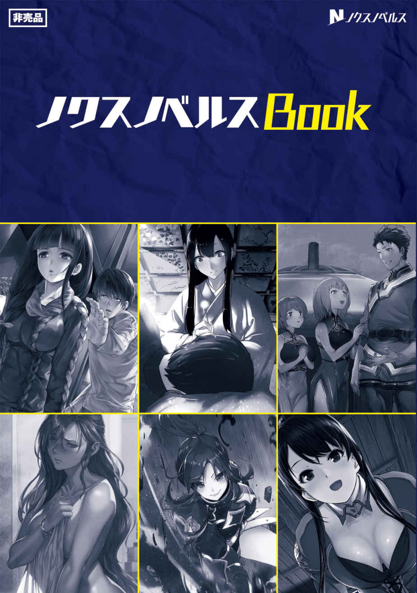
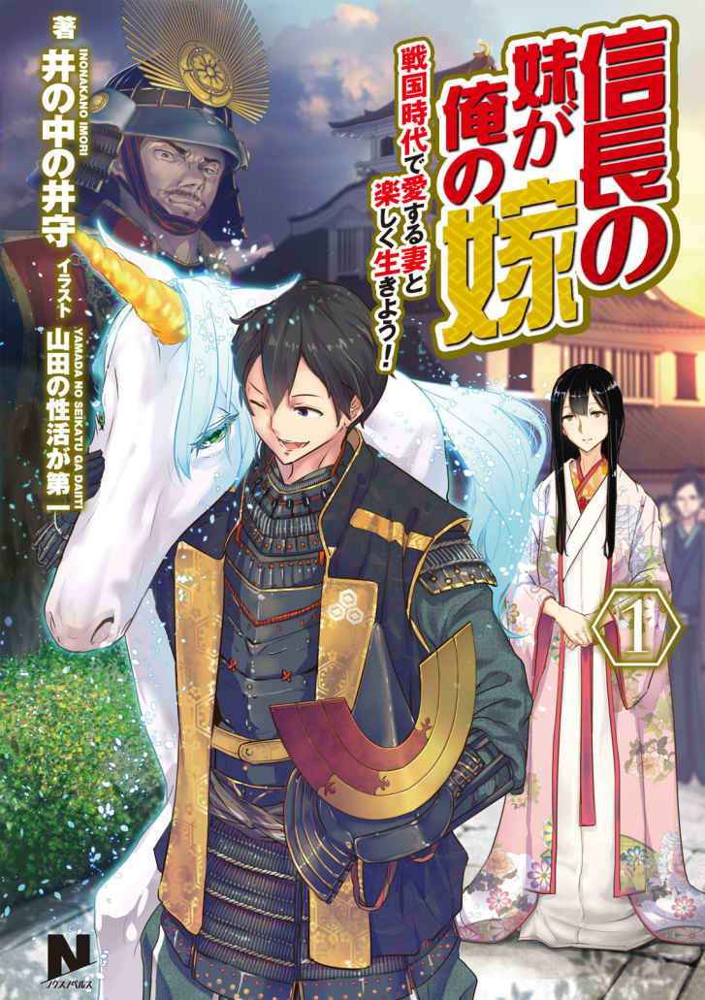
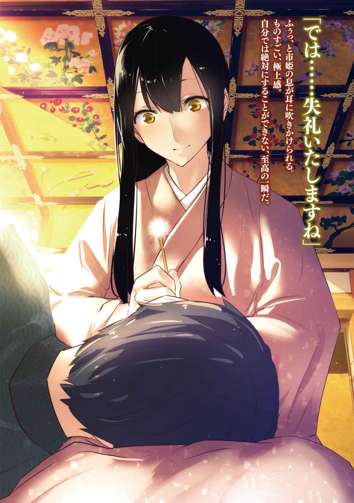
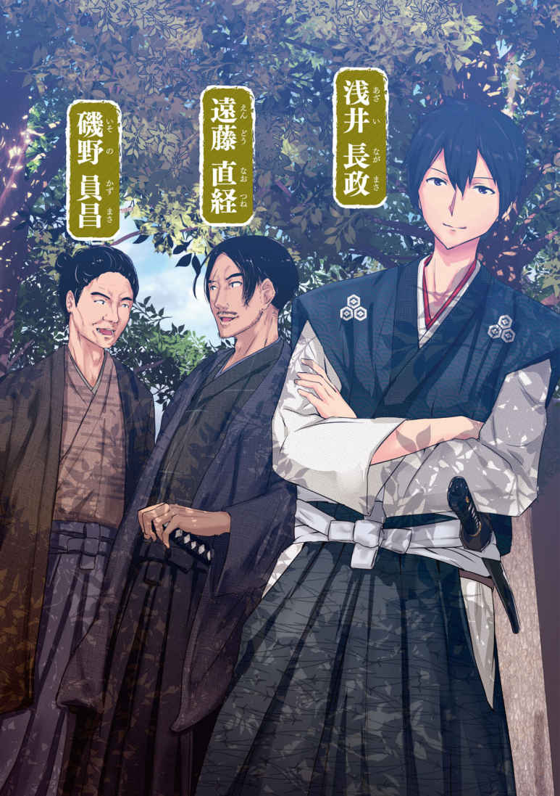
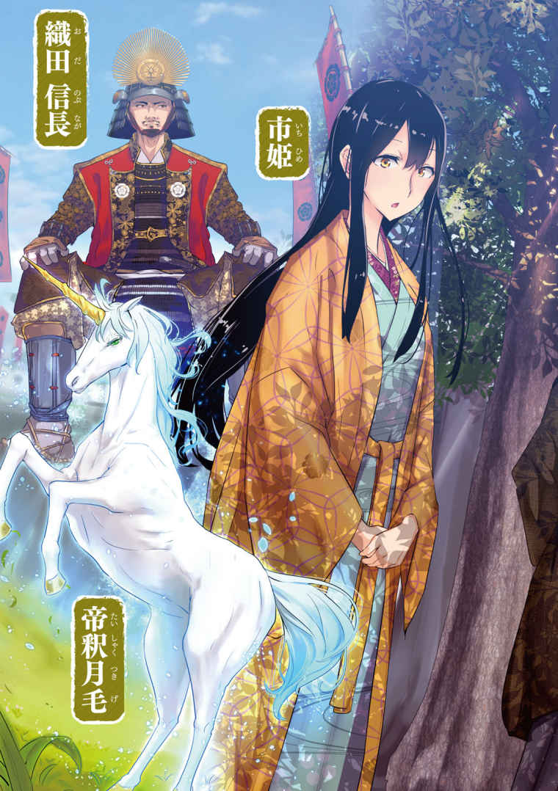
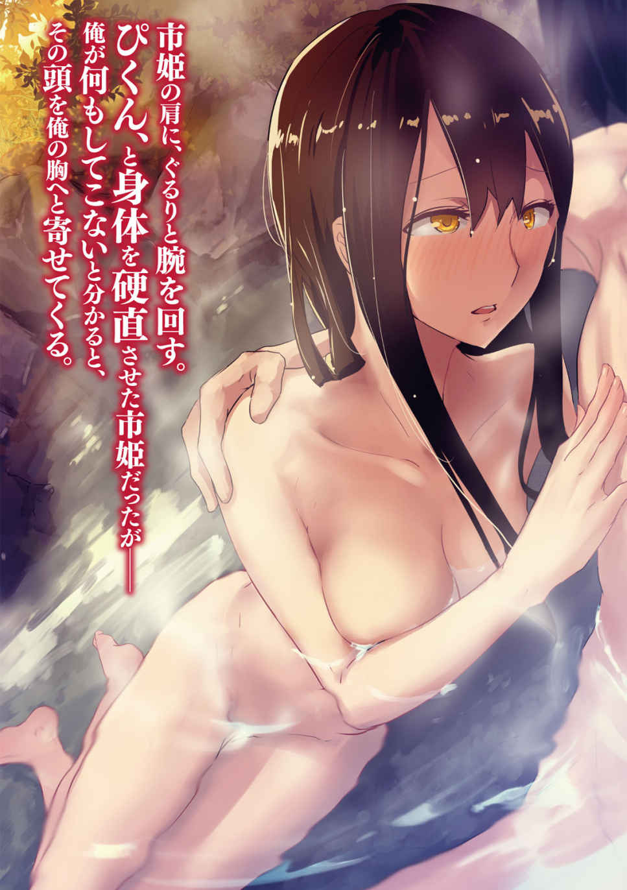
無数の男たちがいる。
いずれもが屈強な身体 つきをした男たちだ。
そして、誰もが皆、頭を下げている。
しかも、彼らに頭を下げさせているのは俺だった。
そんな体験をしたことのある奴が、今の日本にどれだけいるというのだろうか？
「それでは、評 定 をはじめますぞ！」
俺から見て一番手前にいる、よく日に焼けたおっさんが大声で告げた。
「まずは領内における税の徴収状況についてから......といきたいところではありますがな」
おっさんは俺の方をちらりと見て、本当に嬉しそうな顔をしながら、ガハハと大声で笑った。
「皆の衆！ 明日はいよいよ、織田家より姫をお迎えする日にございますぞ！ 万事滞りなく進めることができるよう、一致団結してゆくことに致そうではないか！」
おう！ と男たちが声を上げる。
俺は必死に平静を装いながら、男たちに何かしら問われる度に「そうするが良い」と答えることにした。
ボロを出してはまずい......
というのも、俺は目の前で起こっている状況の全てをまったく把握していないうえ、理解すらできていないのである。
（どうして、こうなったんだ......）
俺は冷や汗を垂らしながら、むさくるしい男たちが「ああでもないこうでもない」と繰り広げる終わりの見えない打ち合わせと議論を、茫然と眺めていたのだった。
俺は、福祉施設の寮にある自室で、明日に迫っている学期末試験の勉強をしているはずだった。
そう、いわゆる「一夜漬け」というやつである。
日本のテストというものは、良くも悪くも暗記主義だ。覚えれば点数が取れるし、覚えていなければ点数が取れない。そんな、極めて単純な構造で成り立っている。
俺はこれまで試験勉強は一夜漬けで乗り切ってきたし、実際に今までそれでなんとかなってきた。
しかし、今日に限ってはどうにもやる気が出ないのである。
（こんな時は、やっても無駄だな......）
俺は早々にシャーペンを放り出し、数学ⅡＢの教科書を閉じた。
そして気分転換に、明日の試験とは全く関係のない歴史学の研究書を引っ張り出す。
その表紙にはボロボロのブックカバーが掛けられている。キルトで作られた、いかにもなお手製のブックカバー。そして、その端っこにはご丁寧に持ち主の名前が縫い込まれている。
深井長政。それが、俺の名前だった。
そして、このブックカバーは──俺の所持品のなかで、母親がその手で作ってくれた唯一の物だった。
とはいえ、俺の父親も母親も、俺がまだまだ幼い時に他界してしまっているので思い出らしい思い出は存在しない。
このブックカバーも、母親が俺に「よく本を読む子に育ってほしい」という願いを込めて作ったものだというが......
皮肉にも、これを渡してくれたのは母親その人ではなく、遺品整理をしていく過程で、施設の職員が偶然に発見したものでしかなかった。
だが、両親との思い出がほぼ存在しないとはいえ、ひとつだけ彼らに感謝していることがある。
それは、「英雄 」だとか「宇宙 」だとか、そんな変な名前を俺に付けなかったことだ。
どこに出向いても恥ずかしくない名前というのは、俺たち子供にとって、地味に嬉しいことなのである。
俺はそんなことを頭の片隅で思いつつ、研究書を舐めるように読み進めていく。
母親の望み通り、俺は読書が趣味と言って良いほどの文学青年となっていたが──
（──ただし勉強、てめーはダメだ）
はたして、俺は学校で教えられるような「勉強」の類 が大っ嫌いなのである。
もっと言ってしまえば、「お前、これ覚えろよ」的な押し付けをしてくる教師たちが大っ嫌いだった。
だから試験勉強には全く身が入らない。
そんな暗記と詰め込みだけの作業よりも──もっと、人生に直結するような、あるいは生き方が豊かになるようなことを教えて欲しいし学びたい。そう考えているのだ。
今の教育制度ではそんなことは到底無理だし不可能だろうけれども、俺はそういうモノじゃなければ「学び取ろう」とはこれっぽっちも思わなかった。
そして、そんな俺が最大の関心を示しているのが、歴史学である。
『歴史って、ただ覚えるだけだろ？』
そんなことを言っているクラスメートもいるが、こういった類の連中はまるで分かっていない。
俺は知っている。
『歴史は覚えるものではない。今という時代を生きる人間が、自ら見つけ出すものである』
そのように、歴史家たちが口を揃えて言っていることを。
そして、俺がそういった歴史家たちの言葉と出くわした時期も時期だった。
すなわち──人間誰もが罹 り得る病、中二病。
今なお俺は、中二病を引きずっている気がするけれども──何はともあれ、俺が図書館で歴史書と出会った頃は、まさしく中二病の最盛期だったのである。
それで、俺の進むべき道はほぼ決まってしまった。
中二病患者は、誰よりも貪欲に知識を欲するものである。
たとえば俺の周囲では、邪神の名前や設定、あるいは格好良い言い回し等を──さながら乾いたスポンジのように吸収していく連中で満ち溢れていた。
だが、俺と彼らとでは、中二病の進む道が若干異なっている。
俺が欲しているのは、人が生きるための知識だった。
たとえば、過去の政治家たちがどういった政策を行って、支配される側である民衆がそれに対してどのような反応を示したのか。過去の経済はどのような構造で成り立っていて、民衆はどのような仕事をしていたのか。過去の社会にはどのような文化があって、民衆はどのような生活をしていたのか──などなど。
それを知ることで、これからの人生の参考にしようと思ったのだ。
（まぁ、そんなことばっかりしているから、試験の度に「一夜漬け」をするハメになってるんですけどね）
手元にある時計は、既に夜中の三時を指している。
（ヤバい......そろそろ勉強しないと）
随分と歴史書を読むのに熱中してしまっていたらしい。
俺は慌てて数学II Ｂの教科書を開いた。数式や公式やらが大量に目の前に広がり、頭がクラクラしてくる。
（ね、眠い......眠すぎる......！）
気付けば時計の針は、無慈悲にも夜中の四時三〇分を指している。
もはやこれまで──俺は教科書を投げ出し、ベッドに潜り込んだ。
（六時だ。六時に起きて、一時間だけでも真面目にやれば......）
そんなことを思いながら、俺は眠りについた訳だが──
「殿、お目覚めの時間です」
「──は？」
気付けば畳敷きの風流な部屋で、ふとんの前身である褥 のなかにいて、ちょんまげもどきのような変な髪形をした少年に起こされたのだった。
そしてあれよあれよという間に分厚い着物と袴 を着せられ──訳も分からぬまま、冒頭のシーンに至った訳である。
「長政様、我らが領内に織田家の者が入った時の手筈は、このようなかたちでよろしゅうございますな？」
「......そうするが良い」
だが、いつまで経っても受け身のままでいる俺ではない。冷静になるように努めていた俺は、徐々に状況を把握しつつあった。
まず、俺の名前はひとまず「長政」だと男たちに認識されているらしい。
そして、俺に対して彼らが下 手 に出ていることを考えれば、俺は男たちにとっての上位権力者──すなわちボスであるのだろう。
そうなれば、このだだっぴろいお城のような建造物も俺のものだと見て良い。
それに加えて、「織田家」という言い回しである。
（これはもしかすると......）
俺はごくりと、生唾を呑み込んだ。
そして危険であることは承知の上で、鎌をかけてみることにする。
「今の年を申してみよ」
「......は？」
大広間がシンと静かになった。
俺が一体何を意図して言ったのかが、まるで分からなかったらしい。
ボスである俺に対して、下手なことは言えない──そんな緊張感が、男たちの間には漂っている。
「お館様、今の暦 は永 禄 一〇年にございまする」
大広間からひとりの男が発言した。
俺はそいつの方向を見て「うむ」とゆっくり頷いてみせる。
どっしりと腰を据え、ゆっくりと身体を動かすだけで、なんとなく威厳っぽい雰囲気を醸し出せるのだ。対人交渉術の基本である。
「......節目の、年だ」
俺は一〇という数字を聞いてから、とっさに思いついたことを口にした。
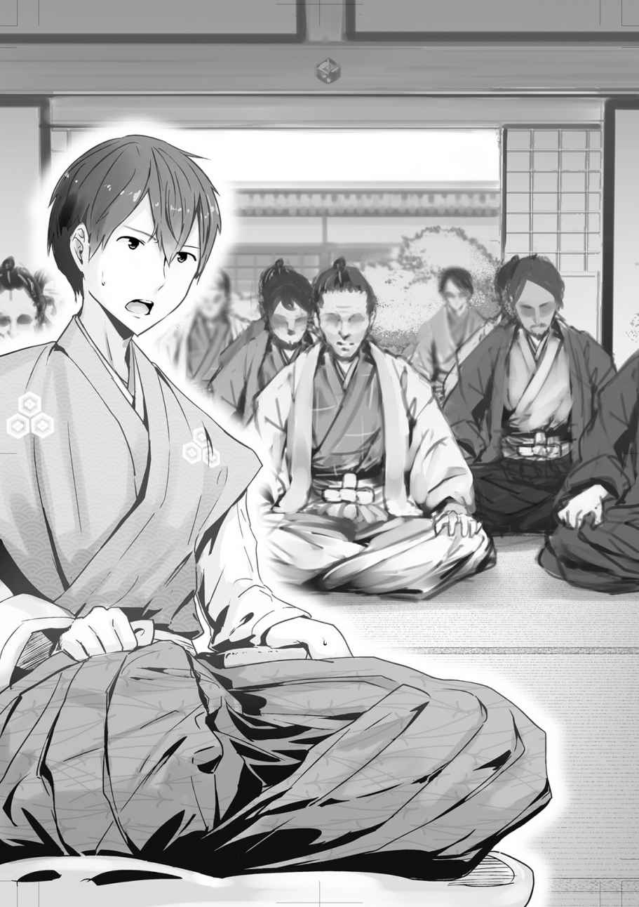
それだけで「おぉ......！」というどよめきが大広間から生まれてくる。単純すぎだろ、お前ら。
「俺はこのように精気に満ちているし、織田の御当主もまだまだ壮健である」
そして、俺は一番手前にいる例のおっさんを、意味ありげにジッと見つめた。
おっさんは何か言わなければならないと思ったのだろう、「はッ」と頷いてから、大広間全体に響き渡る大音量で述べる。
「たしかに、織田の上総 介 殿も三三歳。長政様も二二歳であられますな！ 節目の年に、優れた当主を頂く両家が婚姻を結び盟を結ぶ......。いやはや、なんという吉祥か！」
おぉ！ とまたもや大広間がどよめく。
俺は内心で「二二歳じゃないんだけどな」と突っ込みを入れつつ、しかしおっさんを見ながらそれっぽく頷きつつ、確信していた。
永禄一〇年に織田上総介──すなわち織田信長と盟約を結んだ長政とは、まさしく近江 の戦国大名・浅 井 長政に他ならない。
（って嘘だろ、おい!! 俺が......浅井長政!? ）
その事実を認識するや否や、俺の心臓が途端にバクバクと跳ねはじめ、脂汗がダラダラと身体中から噴き出していた。
時々読んでいたラノベで起きるような夢物語が、まさか現実に、しかも俺の身に起きてしまうとは......
俺は思わず、胸元をきつく握り締める。
（それに婚姻って、どういうことだよ!? 俺はまだ学生だぞ!! ）
しかも相手の兄は、あの第六天魔王ともよばれた戦国の覇者・織田信長なのだ。
今の俺、浅井長政の首を切り落としてその骸骨に金箔を塗りたくって酒を飲みまくるヤバイ奴だ。
もう色々な意味で生きた心地がしない。
「では、これにて評定を終えることと致しましょうぞ。明日を万全な状態で迎えるため、各自、死力を尽くして己 が役目を果たされよ！」
例のおっさんが大声で会議の終結を宣言した。
ちなみに、このおっさんは浅井亮 親 というらしい。大広間の男たちの会話に、必死に聞き耳を立てていた甲斐があったというものだ。
俺の記憶が正しければ、浅井一 門 衆 のなかでもかなり有力な武将であり、信長との同盟関係構築に積極的に動いていた人物である。
（まずは、確実にこいつら全員の名前を覚えなければ......！）
状況を把握した俺は、もう必死だった。
少しでも下手なことをしたり、あるいは部下に無 体 なことをすれば──すぐさま俺の首が飛んでいってしまうだろう。明智光秀をハゲ野郎扱いしていた信長が、本能寺で殺されてしまったのは有名な話である。
つまりこの時代では、俺が相手の名前を間違えただけでも、即座にそいつが反乱を起こす切っ掛けとなったりするのだ。
だからこそ、評定が終わった後──俺はすぐさま部屋に引きこもり、一日を費やして、必死に手持ちの情報を整理することにしたのだった。
俺が戦国時代に訳も分からぬままトリップしたその翌日。
例のおっさんこと浅井亮親が、安 養 寺 氏 種 と遠藤直 経 というふたりの武将を連れて、早朝に織田家の支配領域へと旅立っていった。
遠藤直経と言えば、戦国時代を少しでも知っている人ならば誰でも聞いたことのある人物だろう。浅井家が織田家と対峙した姉 川 の戦いで、信長の本陣にひとりで潜入したとんでもない奴である。
安養寺氏種は、浅井亮親と共に今回の浅井家と織田家の婚姻同盟を仲介した立役者だそうだ。
ちなみに、この三人が俺に挨拶に来た時にはちょっとした事件が起きている。
というのも無下に追い返すのも悪いと思ったので部屋のなかに招き入れて茶と菓子を出させたら、文字通り号泣しはじめたのだった。
三人の男たちはいずれも男泣きに涙と鼻水をダラダラと垂れ流しながら茶を干していったが、そのなかでも直経は、目を赤く腫れさせながらも終始俺に熱い視線を送ってきていたのだ。
彼らは何度も頭を下げながら、やがて俺の部屋を退出していったのだが──俺からすれば、やはり異様としか言いようがない。だが、後になって冷静に考えてみれば、戦国時代に戦国大名が自ら部下を自室に招き入れて茶を一緒に飲もうとするなど、破格の待遇もいいところである。
そう、昔と今とでは、全く価値観が違うのだ。そのことを、俺はすっかり忘れていたのだった。
そんなこんなであれよあれよという間に事態はどんどん進んでいく。
俺はてっきり今晩には結婚式がはじまると思い込んでいたのだが、戦国時代の常識ではそうではないらしい。
たしかに今日、織田家から浅井家に嫁ぐ花嫁は、浅井家の本城であるここ小 谷 城にやってくるのだが──今日すぐに対面できる訳ではないのだという。
城の一室に泊まり、その翌日から「婚礼の儀」が執り行われるのだ。
今や、小谷城は上から下まで大騒ぎである。尾 張 を支配下に置き、美 濃 を呑み込まんとする大大名・織田信長の妹がやってくるのだから、下手なことはできないということなのだろう。
（まぁ、なるようになるだろうさ）
とはいえ、俺はもう覚悟を決めていた。
どういう訳か知らないが、戦国時代にトリップしてしまった以上──元いた世界に帰ることは厳しいだろう。
それに名前も同じ「長政」だということもあって、違和感がさほどないということも覚悟を決めさせる理由のひとつだった。
（しかも、名字も「深井」が「浅井」に変わっただけだしな......）
加えて、俺は元いた世界に未練がない。
むしろ、試験勉強に追われることなく、生きるために必要なことを学べるこの世界の方が、性にあっている気もするのだ。
俺が学びたいのは、人生に直結するものだ。そしてこの戦国時代では、学ぶべきこととはすなわち殺されないためのこと、自分の命に直結することばかりである。
しかも、俺が歴史学から学んできた知識を生かせば、きっと領地を発展させることができるはずだ。
俺はこの世界で自分の生き方に磨きをかけることができて、この世界は俺の持っている知識によって発展可能という素敵な関係。
そのうえ、絶世の美女とも後世に伝えられる市 姫が嫁に来てくれるというのだ。
覚悟を決めるのは早かったし、そして必然だった。
「決めた。こうなったら領地と市姫を徹底的に開発してやるよ！」
グッと拳を突き上げて、俺はひとり、自室で気勢を上げたのだった。
──だがしかし、俺は自らの見識の甘さをすぐさま認識することになる。
「婚礼の儀」の後、歌え踊れの無礼講が繰り広げられる喧騒の大広間を去った俺たちを待ち受けているのは「お床 入りの儀」──いわゆる「初夜」というやつだ。
薄暗い部屋のなか、灯 籠 の灯りだけがぼんやりと揺れている。
その淡い光に照らされるのは、一組の褥と、正座をしている黒髪の女だけ。
正直、俺は舐めていた。
絶世の美女と謳 われた市姫は、その絵姿が日本史の教科書や資料集には必ずフルカラーで載っている。
俺はそれを見て、失礼ながら「あー、こいつは現代では絶対に通用しませんわー」と嘲笑していたのだが──とんでもなかった。実物はとんでもないほどにヤバかった。
女神は、そこにいたのだ。
テレビやネットで見ることができるような女優やグラビアアイドルなんて、彼女を前にすればまるで犬の糞である。
黒く艶のある髪は絹のように流れ、腰のあたりで切り詰められている。さながら、定規で線を引いたように。
きめ細やかで真っ白な肌は、彼女の美しい黒髪と鮮やかなコントラストを成している。小顔に浮かぶ潤んだ瞳はくりくりと大きく、鼻筋は高い。
そして何よりも、スタイルが良いのだ。
俺は彼女の手を引きながらこの部屋までやってきた訳だけれども、俺とさほど身長差がないことには驚いた。通説通り、一七〇センチ近くはあると見て良い。
腰の位置は高く、着物に隠されているとはいえ──そこから伸びる足も、一般人と比べて相当に長いのだろう。さながら、スーパーモデルのように。
そして着物を押し上げる豊かな胸のふくらみは、男である俺の煩悩をギンギンに掻き立てる。
（やばい、美女だ。本物の美女だ......！）
とはいえ、まだまだ幼さも残っているため、現段階では絶世の美少女と呼んだ方が良いのかもしれない。
（あー......あーッ！ ヤバい、めっちゃ緊張する！）
ドクンドクンと破裂しそうなほどに脈動する心臓を意識しながら、俺は静かに市姫の前に座る。
すると彼女は三つ指をついて頭を下げた後、若干緊張している面 持 ちで俺を見上げてくるのだった。
「織田市でございます。長政様、改めまして......これから末永く、どうかよろしくお願い致します......」
その姿を見て、俺は感動していた。ぐうの音も出ないほどに。
なんということだろう──俺たち日本人が長らく忘れてしまった大和撫子は、まさしく、ここにいたのである。
「あ、ああ......。長政、浅井長政だ。これから俺が、お前の夫となる。こちらこそ、どうかよろしく頼む」
ぺこり、と俺も頭を下げた。
すると市姫もまた頭を下げる。
俺もなんとなく再度頭を下げ──それを見た市姫は、くすりと笑った。取り繕 ったようなものではなく、とても自然な仕草で。
「そのように、畏 まらないで下さいませ。これよりわたしは浅井の妻となるのですから......」
「そうか──いや、済まないな」
「あら......ふふふ、いけませんよ長政様。ほら、また頭を下げられておられます。わたしの前では、そのようなことをされる必要はございませんよ。長政様は男性で、わたしは女なのですから」
そう言って、くすくすと笑う市姫。笑い方ひとつも綺麗というか上品で、思わずみとれてしまいそう。
俺は表面上、彼女に応じて笑みを作りながら──しかし内面では、物凄く困惑していた。
確かに、この時代はまだまだ男尊女卑が凄まじい時代であったことは間違いない。
しかし俺は、男女平等というか、同権主義の時代に生まれ育った人間である。
男だから偉いだとか、妻に対しては頭を下げる必要がないだとか、そんな発想は出てこないのだ。
「わたしの務めは長政様の御世継ぎを孕 み、そして産むこと......。ですから、長政様はわたしのことなどお気になさらず、長政様自身のお務めを果たして下さいませ。それが、わたしの望みでございますから」
「......少し、待て」
流石 に俺は、彼女の言葉を咎 めざるを得なかった。
「お前のことを気にせず、俺の役目を果たせ......だと？」
「それが......何か？」
市姫は平然と、首を傾 げながら問う。
「妻の仕事は、夫の子供を──御世継ぎが生まれるまで孕むことでございましょう？」
「......」
なんという、ドライな思考。いや、この時代だとこの発想の方が正しいのだろうか......
俺は押し黙り、ジッと彼女を見た。とてもではないが納得できず、胸のなかにもやもやとしたものを抱えながら。
（これが、時代の差が生む意識のギャップって奴か......）
そして市姫は、俺がどうにも納得していないということが分かったのだろう。
おずおずと、俺に訊いてくる。
「あの、申し訳ございません......。もしかするとわたしは、何かおかしなことを言ってしまったのでしょうか......？」
本当に、夫婦というものに対する意識のズレがある。俺はそう実感した。
「......夫婦は、別に、子供を産むためだけのものではないだろう」
「えっ......？」
市姫が、きょとんとした顔を見せる。
「確かに子供を産むということも大切なのかもしれん。実際に、俺も子供はいつか機会があれば欲しいとは思っていたし、憧れもあった。だが、子供を産むということだけが夫婦の在 り方だと言われれば、俺は反論せざるを得ない」
別に子供など、欲しければ養子でも貰ってくればいいだろう──そう言うと、市姫は心底意外そうに訊いてきた。
「あの......では、長政様は......その、夫婦とは何をするものだと......」
「信頼し合う、ものだろう」
「信頼......ですか」
「そうだ」
俺はゆっくりと頷いた。
「夫と妻は互いに信頼し合い、情を交わし合い、助け合うものだと俺は考える。夫が、妻が、自分の傍 にいてくれれば頑張れる。だから、無理だと分かっていても常に自分の傍にいて欲しい──それを切に願えるような存在......それが、夫婦のあるべき姿なのだ」
「......そう、なのですか」
市姫は両手で胸元を押さえ、考え込むような仕草をみせた。
彼女のなかで、俺の言葉がストンと落ちてこないのだろう。先程の彼女の発言に、俺がもやもやを感じたように。
「まあ、良いさ」
俺は割り切って、市姫に言った。
「結局のところ、夫婦も他人同士でしかない。だから、互いの言っていることが納得できないということは、むしろ当然のことなのだ。そして俺とお前は、今日出会ったばかり......。最初から見解が一致することがあれば、むしろ恐ろしいことでもある」
そう言って、俺は彼女の手を取った。
俺の真剣さが伝わったのだろう、市姫も俺の顔を真面目な表情で見つめてくる。
「縁あって、俺とお前は夫婦となった。これから長い付き合いとなるだろう。その間に、互いのことを知り、人柄を理解し、意見を擦り合わせていきたいものだ。やがて俺がお前を理解し、お前が俺を理解し、信頼し合えるように。少なくとも、俺はそうやってお前に向き合うつもりだ」
「......分かりました」
市姫は背筋を正して、俺に向き直る。
「わたしにはまだ、長政様が仰っている『夫婦』のことが、よく腑 に落ちてはいません。ですが、長政様がわたしのことを知ろうとして下さっている......そのことは理解できます」
「ああ」
「また改めて、ではございますが......これからどうぞよろしくお願い致します」
「そうだな。こちらこそ、よろしく頼む」
「はい！」
今はまだ、これでいい。市姫の微笑 みを見ながら、そう思う。
彼女が、俺との対話を拒絶する──ということは、まずなさそうだ。
その事実に、俺はホッと胸を撫で下ろす。
（だって......市姫と折角夫婦になれたのに......）
殺伐とした夫婦生活だけは、送りたくはなかったのだ。
（いずれにせよ、俺はこの時代の「常識」を受け入れて、時と場合に応じて、今のように変更を迫っていく......）
そういった方法しか、取れそうになかった。
（でもまぁ、それでも現代っ子である俺には......気になって仕方がないんだよなぁ......）
つまるところ、夫婦というものを──機械的な子作りをする存在としかみなしていない、おしとやかなお姫様を、女として徹底的に開発するとどうなるのか......と。
「そう、エロ同人みたいに。エロ同人みたいに」
「......え？」
僅かに首を傾げながら、市姫が疑問の声を上げる。
しまった。思わず口に出してしまっていたらしい。
「あの、長政様......？ えろどうじん、とは......その、いったいどのような......？」
「ああ、教本のことだ」
俺は咄 嗟 にそれっぽいことを言う。
すると市姫は即座に顔を赤らめ、俯 いてしまった。
さてさて、教本と聞いていったいナニを想像したのだろうか。
もしかすると、実はそういったことに関してそれなりに興味を持っているのかもしれない。
──だが、そんなことよりも、俺の股間の方が問題だ。
考えてみて欲しい。
灯籠の光が淡く照らし出す、ムーディな薄暗い部屋。
そして「お床入りの儀」の演出なのか、仄 かに漂う香の香り。
一組の褥が敷かれ、その上で恥じらっている黒髪ロングの美少女。
据え膳食わぬは男の恥。いや、恥どころかこの状況で手を出さない男なんて男じゃない。男の機能がいかれているとしか思えない。
俺は数多 あるラノベの主人公ではなく、あくまでも生きた人間なのだ。手を出して良い──というよりも、それが推奨されている女性に対して、欲情しないはずがないのである。
「あ、あの......」
褥に優しく市姫を押し倒すと、黒髪がサッと流れる。
そして彼女は恥ずかしそうに視線を逸らしながら──
「その、わたし......。あの、はじめて、ですから......えっと......」
──そんな、男のロマン溢れることを呟くのだった。
「大丈夫だ」
俺は綺麗なかたちをした市姫の頬を撫でながら、耳元でそっと囁いた。
「ちゃんとしてあげるから。安心して身を委 ねるといい」
「え、えろどうじん、とやらのように......ですか？」
恥ずかしそうに言う彼女に、俺の息子はそろそろ限界だった。
というよりも、その恥じらう顔や仕草、そして美しい声を見たり聞いたりしているだけで──暴発しそうになっている。
市姫の着物に手を掛け、ほんの少しだけ力を入れると、するりと真っ白な肩が露 わになる。
誰も足を踏み入れたことのない雪原を思わせるそれを前に、思わずゴクリと唾を飲み込むと、俺は「市姫開発計画」の第一歩を踏み出したのだった。
※続きは製品版でお楽しみください♪
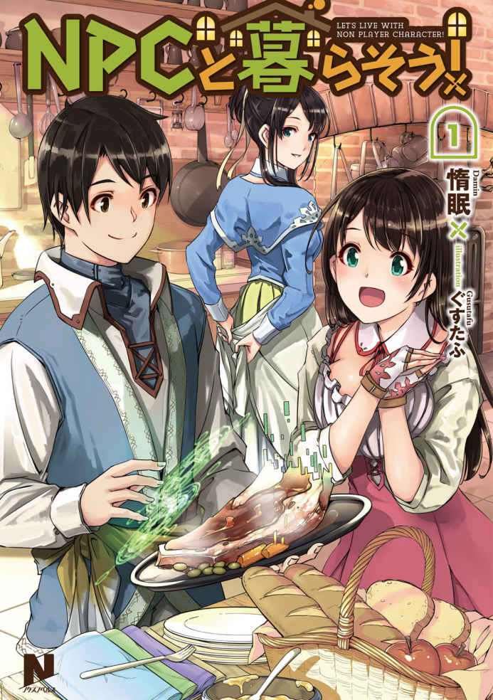
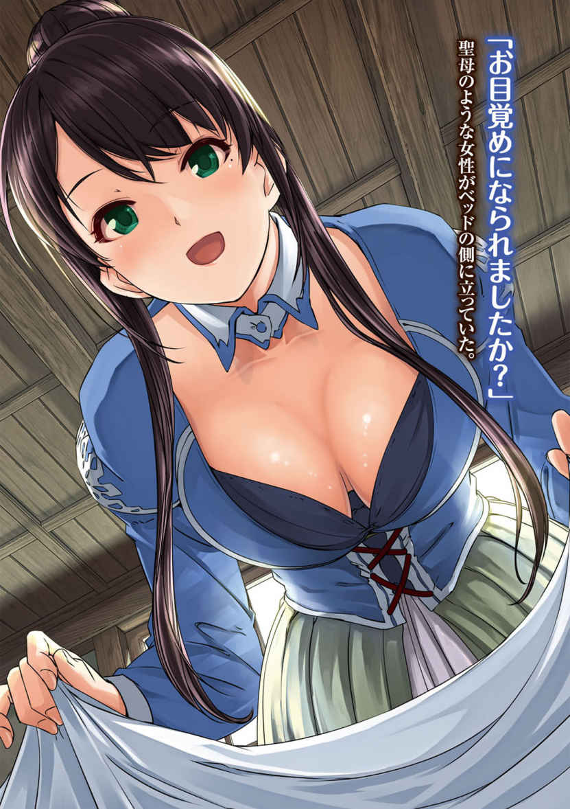
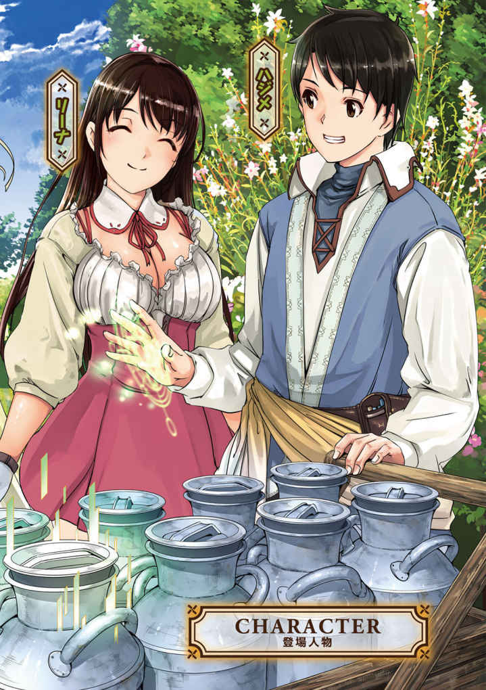
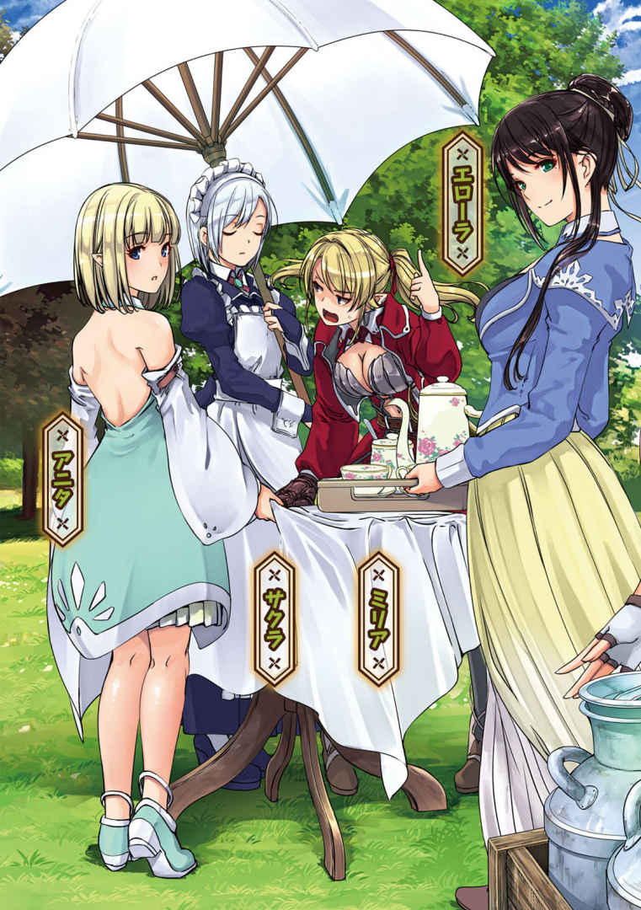
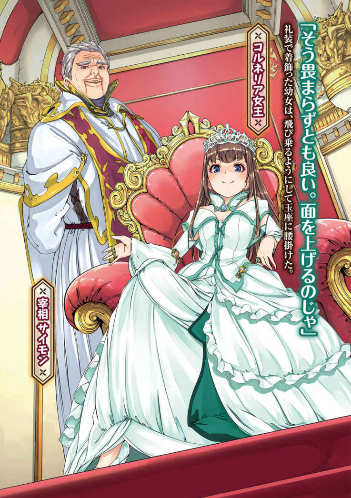
「今日も疲れたなぁ」
会社帰りの俺――柊 一 は、もうくたくただ。
毎日毎日上司にとんでもない量の仕事を振られ、挙 句 細かいミスを延々と説教される始末。
辞めてやる！ って毎日思いながら、結局ずるずる会社に通っている。
愚痴が言える同僚や友人がいればもうちょいマシなのだろうが、暇な時間は常に一人でゲームをやっているような社交スキル皆無の俺に、そんな気心がしれた奴はいない。
大体、今の部署が女メインの所で、男は俺一人しかいないというのが問題だ。
いや、それ自体は大した問題じゃない。むしろ見ようによっては天国ですらある。
自分のデスクに座って右を見ても女。左を見ても女。しかも結構若く、美人が多い。何も知らない人が見ればハーレム状態だろう。
でも現実はそんなに甘くない。
周囲にいる女の同僚たちは、俺という男がまるで存在しないかのようにガールズトークに花を咲かせる。近所に出来たスイーツの店が美 味 しかったとか、誰々が密 かに不倫しているとか、そういう話だ。
ゲームオタクの俺が参加できるわけがない。愛想笑いが精一杯だっつーの！
生々しい話なんてもう無理、聞きたくないと思っても、小心者の俺には意見するなんて大それた事ができるはずもない。そっと席を離れることが俺に許された唯一の抵抗だ。思い出すと泣きたくなってきた。
だから諦 めるまでにそう時間はかからなかった。
今ではもう空気のように存在感を消している。一人でいるほうが楽だと悟ったのだ。ぼっち万歳。
だが、そんなぼっちの俺でも今日は足どりが軽やかだ。終電をぶっちぎっている時間だが、今の俺には些 細 な事である。何せ、今日は新しいＶＲゲームを買ったのだ。それをプレイできるのが楽しみで仕方ない。
ちなみにＶＲゲームというのは、ヴァーチャルリアリティーゲームの略称で、実際にゲーム上の世界を訪れたような体験ができるゲームの事だ。
ＶＲゲームでは、プレイヤーの脳から直接情報を取得し、ゲーム内における自分の分身――アバターを動作させるシステムが採用されている。つまり、プレイヤーはデジタルデータによって構成された仮想空間内を、自分の意思一つで自由に歩き回る事ができるのだ。
このゲームを最初に体験したプレイヤーたちは皆、口を揃 えてこう言ったらしい。『まるで異世界に転移したみたいだ』と。
今では、そんなＶＲゲームが主流になっていた。その中でも、特にＶＲＭＭＯというオンライン型のゲームが人気を博している。
でも、正直俺は興味を持てないでいた。
だって、剣ででっかいモンスターと斬り合うとかありえないでしょ。一昔前のモンスターパニック映画なんて目じゃないほど怖いに違いない。
だから、ゲームはレトロなドット絵の２Ｄゲームが至高だと思っている。
そんな俺がＶＲゲームに手を出してみようと思った理由は簡単だ。
エロのためだ！
もう一度言おう。
エロのためだ！
大事なことなので、二度言っちまった。
俺が昨日通販で買った『Ｄｉｖｅ ｔｏ ｔｈｅ Ｆａｎｔａｓｙ』は、ＶＲＲＰＧってジャンルのゲームだ。
『ファンタジーの世界に飛び込め！』って名が示す通りのファンタジーＲＰＧで、ＶＲＭＭＯをオフラインにした感じというのが一番わかりやすい説明だろう。自由度を売りにしていて、クエストをこなしたりお金を貯 めて家を買ったりと色々できるらしい。
だが、そんなことに興味はない。大事なのはエロ。この一点に尽きる。
このゲームはＭｏｄ が公認されている。Ｍｏｄというのは、いわゆるユーザー側が作ったゲーム改造ファイルのことだ。
例えば、剣で戦うリアル系ＲＰＧに魔法要素を追加したり、ユーザーが作ったクエストを新しく追加したりするようなものがあって、ゲームをより面白くしてくれる。
で、そんな風にＭｏｄには色々な種類があるんだが......実はエロＭｏｄなんてものがあるという噂 を小耳に挟んだのだ。
そんな事を聞いてしまったら、やってみたくなるのが漢 ってものだろう？
ゲームは２Ｄ派だが、エロは３Ｄでも全く問題なし。むしろ『リアリティー』が売りのＶＲゲームでエロを堪能できるとか最高じゃないか。
あ、でもこれは内緒にしないとな。ＶＲ規制法なんてものがあって、基本的にＶＲでのエロ要素は厳禁なんだ。だから、アングラサイトから......もごもご。
てなわけで、物 凄 く楽しみにしながら家路を急いでいる。
そんなことを考えている間に、自分が暮らすボロアパートの前に着いた。でも、この閑静な住宅街に似つかわしくないお方達が目に入ってきて、思わず立ち止まってしまった。
「......いつからここはマフィアの勢力圏内になったんだ？」
アパートから少し離れた所に、黒スーツを着た男が二人立っている。グラサンにスキンヘッド。どう見ても関わり合いたくない人種だ。もちろん、俺の知り合いにあんなイカツイ奴らはいない。
顔を伏せ、目を合わせないようにして縮こまりながら、コソコソとアパートの階段を登った。
何かこっちを見ていた気がするが、たぶん気のせいだろう。自意識過剰ってやつだ。
「ふぅ......何か緊張した」
ドアのカギをきちんと閉め、チェーンロックまでしっかりかけてから、ようやく一息ついた。中二病患者としては、非日常系の物語は大好物なのだが、リアル非日常はノーサンキューだ。
気を取り直して散らかった部屋の片隅へと向かい、購入したばかりのゲーム機を手に取った。ＶＲゲーム専用のヘッドリングだ。少し前までは重厚なヘッドギアだったらしいが、最近軽量化されて、ファンタジー世界に出てくる頭防具――サークレットによく似た形状になったらしい。これを着けるとファンタジー世界の住人になった気分を味わえて、俺は結構気に入っている。丁度コスプレをしている感じだ。
そのヘッドリングの側面にあるボタンを押すと、何もない空中に青みがかった半透明の仮想ディスプレイが展開された。
「お、ちゃんと終わってる。片っ端からダウンロードしまくったから、終わってるか心配だったんだよな」
仮想ディスプレイを埋め尽くしているダウンロードバーを見ながら呟 いた。それらは全て完了を示す緑色になっている。
「じゃあ早速......あ」
ふと自分を見下ろすと、長時間労働でシワシワになった白のカッターシャツと、同じくよれよれになったネクタイが目に飛び込んで来た。
「外着のままだ......ま、いっか。とりあえずプレイしてみたいしな」
着替える時間すら惜しかった俺は、スーツ姿のままベッドに寝転がり、起動ボタンに指を添えた。
「よし、じゃあ起動！」
期待に胸を膨らませながら起動ボタンを押す。
次の瞬間、俺はファンタジー世界に飛び込んでいた......わけではなかった。まだ慣れ親しんだ俺の身体の感覚がある。どうやらまだ仮想世界に飛び込めていないらしい。
一瞬故障かと疑ったが、そうではなかった。眼前に展開されている仮想ディスプレイをよく見てみると、Ｍｏｄのインストールプロセスが途中で止まっている。
ディスプレイの中央にデカデカと表示されているダイアログには、こんな文字が躍っていた。
『ＡＩＭｏｄの利用規約に同意した上で、本当にインストールしますか？ Ｙｅｓ／Ｎｏ』
「なんじゃこりゃ？ あ、ＡＩＭｏｄって言ったら確かＮＰＣが人間みたいにいろんな事を自分で判断できるようになるやつだっけか。ＹｅｓだＹｅｓ！」
『Ｍｏｄをインストール中......作業進捗度、現在１％』
結構時間がかかりそうだ。
仕方なくヘッドリングを外し、部屋着のスウェットに着替えて時間を潰 す。着替え終わって見慣れた狭い部屋を見渡した俺は、思わずため息をついた。
「流石 にこれは不 味 いよなあ」
周囲にはゲームソフトや衣類が散乱していて、足の踏み場もない状態だ。
明日は久々の休日だし、流石にちょっと掃除しようと心に決め、再びヘッドリングを被る。すると、進 捗 度は九十八％まで来ていた。
『インストールプロセス、コンプリート。続いてセットアップ開始』
「まだあるのかよ......。ああ、名前ね。ハジメっと。顔？ 体型？ 適当なプリセットでいいよ。ポチポチっとな。む......エロＭｏｄ入れたお陰で、チ○コのサイズがいじれる......だとっ!? うん、巨根にしておこう」
適当に項目を埋めていくと、ようやく確認ボタンが現れた。俺はすぐさまそのボタンを押す。
『セットアップ完了。リンクスタート』
来た来たぁ！
さぁ、いざ征 かん。エロの世界へ。
× × × ×
目を開けると、俺はベッドで寝ていた。先程までとは明らかに感触が違う硬いベッドだ。
仰 向 けになって上を見ると、何 処 か違和感のある木目が入った平らな天井が広がっていた。少し考えて、違和感の正体は電灯が見当たらない事だと気付く。
続いて窓近くの壁へと視線を移すと、見事な彫刻が彫られている小さな鉄台を見つけた。台の上にはロウソクが立っている。
麗 らかな日差しが差し込む小さな窓の外へと目を向けると、木造の小さな家と畑が並ぶのどかな光景が広がっていた。恐らく農村か何かなのだろう。
それらを見て、ああゲームの世界に来たんだなと実感した。よくゲームに登場する中世風の世界観そのものだったからだ。
「やっぱり『知らない天井だ』って言うべきなんだろうか」
ふとそんな事を思ったが、すんでの所で思いとどまった。あまりにもベタすぎたからだ。
ちなみに、オープニングムービー的なものはスキップした。だから何 故 ここで寝ているのかさっぱりわからない。まぁ俺の目的には大して関係ないから、いいんだけどな。
「お目覚めになられましたか？」
透き通るような女性の声を耳にして、振り返る。すると、どこかおっとりとした雰囲気の女性がベッドの側 に立っていた。真っ先に思ったのは、『やべぇ、美人だ』という事。ＮＰＣの顔を美化するＭｏｄを入れてよかったと思った瞬間である。
身体を包んでいるワンピースの服は、ゲームによく登場する如 何 にも村人といった感じの質素なものだ。だが、決して見 窄 らしくはない。
そう感じさせるのは、この女性の表情が原因だろう。
微笑 んでいる姿が聖母みたいなのだ。優しく細められた深い翡 翠 色の瞳に見つめられると、まるで抱擁されているかのような安心感がある。職場にいる顔の造形だけが整った女どもとは雲泥の差だ。
歳は二十代前半くらいだろうか。
艶 のある黒髪を後ろでお団子みたいにまとめている綺 麗 なお姉さんだ。
「は、はい」
って、ＮＰＣ相手にキョドってどうするよ！ 俺！
「貴方 、この村の入り口で倒れていたのですよ？ 意識が中々戻らないようなので心配しました」
そう語る目の前の女性は、本当に心配した表情だ。普通の人間と全く見分けがつかない。
「失礼かと思いましたが、荷物を少々拝見させていただきました。貴方は『旅団』の方なのですね」
『旅団』って何だと思い、無意識に視線を上げると、そこに『？』を丸で囲んだアイコンがあった。注視すると視界の端にウィンドウが展開される。
どうやらヘルプウィンドウという奴 らしい。
「何々......『色々な依頼をこなす何でも屋みたいなものだと一般的には認識されている』。ねぇ。『一般的には』って言葉が気になるけど、まぁいっか」
一人でいる時の癖で、つい思考を声に出してしまった俺は、ハッとなって口をつぐむ。
今の俺は、どう見てもブツブツ何かを言っている怪しい奴である。
「あ、申し遅れました。私はエローラと申します。一応この村の代表を務めています」
でも、エローラと名乗った目の前の女性は、何事もなかったかのように、優雅な動作でお辞儀をしてくる。まるで俺の言葉が聞こえていなかったかのようだ。
そんな無反応を見て、この人がＮＰＣだという事を再認識した。
「しばらくこの村に逗 留 されるおつもりなら、せっかくのご縁ですので、よろしければこの部屋をお使いください。あと、こんな辺境の村には旅団の方が滅多にいらっしゃいませんので、できましたらこの村の色々な依頼を受けていただけると助かります」
再び優雅な動作でエローラさんが頭を下げてくる。その姿は村娘というより、貴族のお嬢様って感じだ。やたらと動きに気品があった。
一度その美人ＮＰＣから視線を外し、今言われた事を咀 嚼 する。ゲーム的な翻訳をすると、この部屋を拠点にして村でチュートリアル的なクエストをこなしなさいって所だろうか。
......で、そろそろいいかな？
初めてのＶＲゲームで、その迫力に呑まれて目的を見失っていたが、俺はこのゲームをクリアしたいわけじゃないんだ。だからぶっちゃけ、チュートリアルなんてどうでもいいんだよね。
「エローラさん」
まだ色々と説明をしてくれているエローラさんに向かって呼びかけてみた。だが、そんな俺の言葉が全く聞こえないかのように、エローラさんはしゃべり続けている。
俺は最後まで聞くしかないのかなと肩を落とした。でも待てよと思い直す。これはゲームだ。だから必ずアレがあるはずだと思い、メニューウィンドウを眺 める。すると端の方に小さなボタンを発見した。『スキップボタン』だ。
俺は流石ゲームだと喜びながらそのボタンをタップした。途端にエローラさんの声が止 む。そして視界の端にウィンドウが開き、選択肢が現れた。
１．身の上話を聞く。
２．この村の状況を聞く。
「うん、興味なし。そんなことよりも......」
エローラさんの身体を上から下まで舐 めるように観察する。
女神と見 紛 うほどの綺麗な顔。質素な服を盛り上げている大きな胸。コルセットのようなもので締め付けられているくびれた腰。長いスカートの裾 から覗 いている細い足。
まるで芸術品のように均整が取れた身体をしている。
しかも、一つ一つの動作が気品に溢 れている。陽光の下、白に統一されたカフェテラスで優雅なティータイムを楽しんでいる姿が似合いそうだ。リアルで出会ったら、きっと話しかける事すらできなかっただろう。俺のような貧乏社畜が普通に生活しているだけでは、一生お近づきになれない女性だと断言できる。
そんな高 嶺 の花と言える女性が、笑顔でこちらを見ていた。
そして、その美女は『ＮＰＣ』だ。
ちなみにＮＰＣというのは、ｎｏｎ ｐｌａｙｅｒ ｃｈａｒａｃｔｅｒの略称で、その名の通り生身の人間が操作していないキャラクターの事を指す。プログラムで動く自動人形と言ってもいいかもしれない。
今プレイしているようなＲＰＧタイプのゲームにおいては、主にストーリーの進行役や、物語の語り部役を担う事が多い。
また、ＮＰＣにはもう一つ特徴がある。一定の決められた行動以外しないというものだ。
当たり前と言えば当たり前の話である。幾ら見た目が人間そっくりでも、中身はあくまでプログラムだ。故 に予 め決められた通りの行動をする。いや、それ以外できないと言った方が正しい。
美しい顔の下でツンと自己主張しているおっぱいをガン見しても、エローラさんは笑顔のままだ。どれだけ不 躾 な視線を向けても嫌がりはしないし、初対面で息がかかる程近づいても避けることさえしない。
しかも、今はチュートリアル的な初期イベントの真っ最中である。そのため、他のＮＰＣが部屋に入ってくる事はないと断言できる。何かのイベント中に別のＮＰＣが割り込んでくると邪魔だからな。その辺 りはゲーム的なご都合主義によって守られているってわけだ。
つまり、何が言いたいかというと......。
「密室。邪魔者なし。無抵抗。しかもとびっきりの美人！ これってエロい事をしてくれって言ってるようなものだよな！」
俺はベッドから立ち上がり、エローラさんの背後に回った。
そんな明らかに不審な動きをしても、エローラさんは特に何の反応もしない。
ゴクリとつばを飲み込む。
「それじゃ、ちょっと失礼して......」
そっとエローラさんの肩に手を伸ばす。だが、触れるか触れないかの位置で、俺は手を止めた。
今俺がやろうとしているようなＮＰＣへの悪戯 くらい、このゲームの製作者たちも事前に想定している。だから当然、予防措置がある。それが倫理コードと呼ばれるものだ。
倫理コードというのは、ゲーム内のキャラクターに性的な接触を試みようとすると反応するシステムで、要はおいた 防止装置といったところか。
でも、俺にはＭｏｄがある。倫理コードを無効化し、悪戯し放題になるエロＭｏｄだ。だから、エローラさんに触れても何も起きない......はずだ。
ちなみに倫理コードが発動すると、かなり痛いらしい。
「ええい、ままよ」
若干引け腰になりながらも、エローラさんの肩をチョンっと触った。
............よし！ 何も起きない！
それがわかるやいなや、無遠慮に肩を掴 んだ。
エローラさんの肩は、力を入れるとポッキリ折れてしまいそうなくらい華 奢 だった。女性の肩を抱くと、きっとこんな感触なのだろうと思えるようなリアルさである。
ゴクリと、再びつばを飲み込む。
顔色を窺 いながら、スススと肩に触れている手を下げていく。エローラさんは聖母のような笑顔を湛 えたままだ。
俺は一旦手を離し脇の下から入れると、目的の山に不時着させた。
ふにゅん。
「うおおおおおおおお！ やわらけぇ......！」
何枚かの布地を通しても伝わってくる柔らかさを感じ、思わず歓喜の咆 哮 をあげる。それくらい、俺の掌 からこぼれてしまう程の大きな果実は、素晴らしい感触だったのだ。
ふにふに。
エローラさんのおっぱいを思いっきり堪能する。
力を込めると、ふにゃりと沈んでいく指。力を抜くとゆっくり押し返してくる弾力。やみつきになる。
時間を忘れて無心で揉 み続けてしまった。
「おっといけない、お楽しみはまだまだこれからだった」
服の上からでも十分過ぎるくらいの感触を味わえた。でも、やっぱり直に揉んでみたいという欲求がムクムクと湧き上がってくる。
「確かＭｏｄの中に......あった！」
ウィンドウを操作して見つけたのは『ＮＰＣ装備強制解除Ｍｏｄ』だ。
解除ボタンをタップする。
シュワンと音をたてて、エローラさんの全身を一瞬光が包む。光が収まると、そこには純白の下着姿になったエローラさんが立っていた。
ちなみに、純白のブラやショーツなんて世界観ぶち壊しなものを着ているのは、下着Ｍｏｄのおかげだ。
服の上からでも何となくわかっていたが、見事なプロポーションだ。下着姿になった事でその破壊力は凄 まじい物になった。
女性らしい丸みを帯びた身体のラインは、芸術作品のように美しい。
ブラを持ち上げているおっぱいは、ＥかＦぐらいあるだろうか。まるで触ってくださいと言わんばかりに突き出ている。
腰のラインはきっちりくびれているのに、その下のおしりはぷりんと膨らんでいて、揉みごたえがありそうだ。脚はまるでモデルのようにスラっと長く、細い。
「こんな女性を好き放題できるなんて......最高じゃないか」
今度は大胆にエローラさんに後ろから抱きつき、右手でおっぱいを、左手でふとももを堪能する。
もう辛 抱 たまらんと大きくなっている俺のムスコも、エローラさんのむっちりとしたお尻にこすりつけた。
「うはっ」
全身で感じるオンナの感触に、嬉 しい悲鳴がこぼれ出る。思わず暴発してしまいそうなほどの快感が下半身で荒れ狂っていた。
だが、まだ一番大事なイベントが残っている。そのイベントを味わう前に出してしまうのは勿 体 なさ過ぎると、こみ上げてくる射精感を必死に抑えつけた。
何とか抑え込んで落ち着いた後、そっと優しくエローラさんのショーツに指を這 わせる。
布地の上からでも感じる柔らかいオマ○コの感触に、再び頭がクラクラしてくる。
俺の我慢は既に限界だった。
「エローラさん、入れるね？」
一応断ってからショーツを解除し、俺のイチモツを彼女のオマ○コにあてがう。そして背後から一気に挿入した。
ずぶっと一気に奥まで挿入した俺の愚息が、温かいヒダで包まれる。
「あったかくて、気持ちいい......」
まるで全身を抱きしめられているような安心感。チ○コから伝わってくる快感が頭の中を埋め尽くしている。もう何も考えられず、本能の赴くままがむしゃらに腰を振った。
室内に響く、パンパンと打ち付ける音。じゅぶじゅぶと聞こえてくる卑 猥 な水音。ぷるんぷるんと揺れる巨乳。五感をフルに使って快感を味わい尽くす。
「ヤバイ......もっと楽しみたいのに......限界！」
こみ上げてくる射精感に抗 うことはできなかった。
「出すよ！ 中に出すからね！ うっ......！」
ドピュ、ドピュ......ドクドクッ！
突き抜けるような快感とともに、エローラさんの膣内に精子をぶちまけた。
「うおっ！ 搾り取られる！」
まるで別の生き物みたいに、うねうねと動くエローラさんの膣内の感触がたまらなく気持ちいい。
腰が抜けてしまいそうな快感を味わった。
「......ふぅ」
たっぷりと余韻を味わった後、チ○コを抜いた。途端に、ドプッと音をたてて白濁液がエローラさんのオマ○コから溢れてくる。
それでもエローラさんは笑顔のままだ。そのギャップが異様に卑猥だった。
「そうか、リアクションＭｏｄをアクティベートしてないから無反応なのか」
今更ながらに思い出したが、一部のＭｏｄは互いに共存ができない。
例えば、エローラさんを幼女にするＭｏｄと熟女にするＭｏｄを同時に使うと、エラーが出ると言えば伝わるだろうか。その対策として、Ｍｏｄのオン、オフが設定できるようになっている。
今はエロの根幹部分を作っているもの以外、全部オフになっている状態だ。だから、エローラさんはマネキンだったというわけだ。
「でも......」
エローラさんを改めて見る。
純白のブラとお揃いのショーツだけを身につけて立っている。その表情は優しい笑顔だ。
しかし少し下に目をやると、股間から白い液体が流れ出している。
「ヤバイ。これはこれでエロい」
これほど興奮を覚えるのは、恐らくシチュエーションに依 るものが大きい。目の前にいる魅力的な美女は、悪戯されたにも拘 わらず、その事に気付いてすらいない。現実世界では絶対に見る事ができない光景である。だからこそ、倒錯的な魅力を感じているのだろう。
妙に冷静な分析をしながらエローラさんの肢体を眺めていると、次々に新たな魅力を発見してしまう。何より、これ程じっくりと女性を観察した事がなかったので、目が離せなくなってしまった。収まっていた性欲が再び湧き上がってくる。
「これはもう一回......って、もうこんな時間じゃないか」
視界の端に表示されているデジタル時計を見て、伸ばしかけた手を引っ込める。午前四時。そろそろ寝ないと明日......ではなく今日、一日寝て過ごす事になってしまう。流石にそれは不味い。
俺は渋々ウィンドウを操作し、ＮＰＣ初期化ボタンをタップした。
またしてもエローラさんが光に包まれる。そして光が収まると、出会った時と同じようにしっかりと服を着ていた。床に垂れていた白濁液も消えている。
「便利すぎる。さて......寝るか」
名 残 惜しい気持ちを抑えながら、ログアウトボタンに触れた。
※続きは製品版でお楽しみください♪
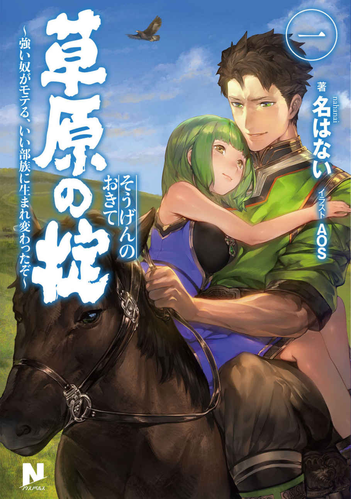
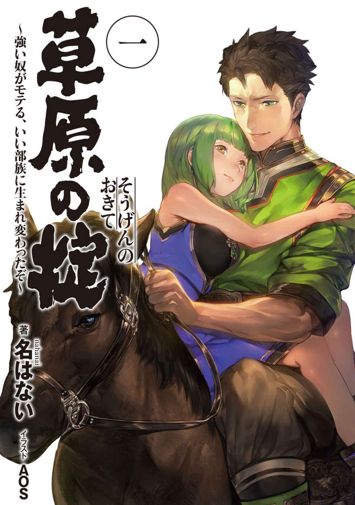
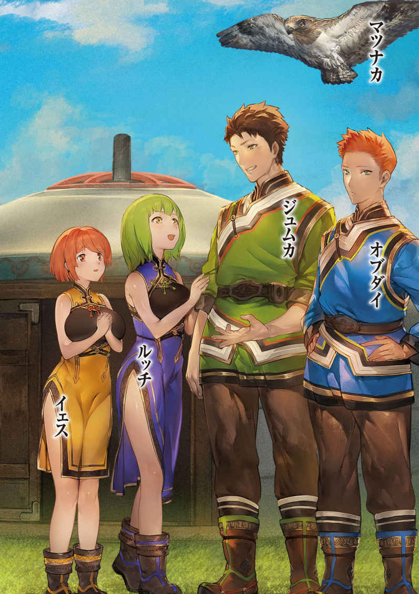
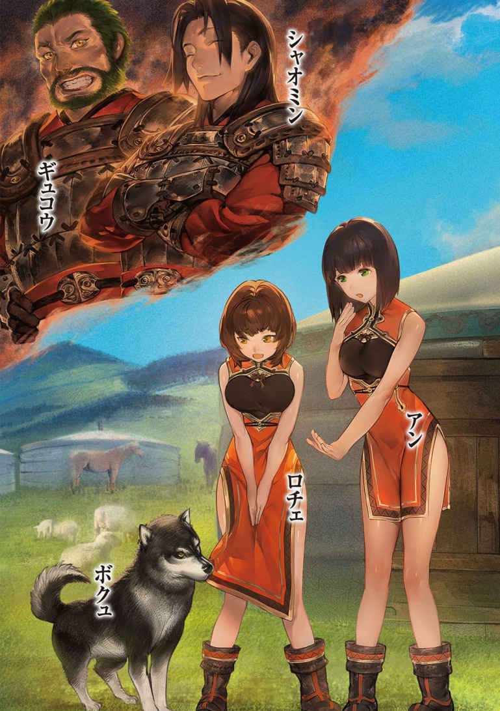
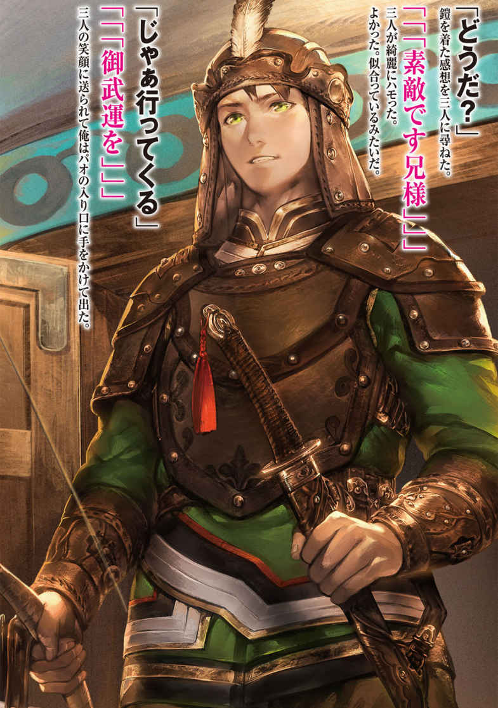
俺は強かった。強かったんだ。
五歳の時、祖父の親友がやっている古武術の道場に通い出した俺は、そこでメキメキと頭角を現した。
その道場では主に剣や槍、十手、弓など武器を用いる武術を教えていた。他にも爺 さんが経営をしている牧場で育てられている馬を使った馬術も教えている。そんな道場だった。
俺はといえば、成長しても身長はうまく伸びず、筋肉の付き方も良くなかった。だがパワータイプでなかった俺は、その代わり爺さんの「技」を乾いたスポンジに垂らした水のように吸収し、中学に上がる頃には技のキレでは誰にも負けることはなかった。いや、師匠の爺さんには、爺さんが病気で倒れるまで一回も勝てなかったな。
爺さんには「わしに勝つまで武術だけをやるのは禁止じゃ」と言われていたのでちゃんと勉強もしていたぞ。ただの脳筋じゃないぞ！
十八歳の時、爺さんに呼ばれて道場の奥にある爺さんの自宅へ行くと、爺さんに孫娘と結婚して道場を継いでくれと頼まれた。
爺さんの孫娘は二十歳と、俺よりも年上だったが、美人というより可愛い系の顔もその顔に似合わないわがままな体 も俺好みだったので、「こちらこそよろしくお願いします！」と即答したのだった。
だって考えてみてくれ。
小中高全てを鍛錬につぎ込み、男女交際とはまったく無縁の童貞の高校生にとって年上のお姉さんとはいかに魅力的かと......。
そんなお姉さんといきなり結婚、初夜セックスが出来るなんて即答しないわけないだろう。
まぁ、そんなうまい話があるわけなかったんだが......。
その後、俺は前から決めていた体育系の大学に行き、そこで現代スポーツ科学を学んで、とあるスポーツジムのスポーツインストラクターに就職した。
しかし、体育系の大学に行って現代スポーツ科学を学び、それに準じたトレーニングをしても、俺の体に筋肉は付いてくれなかった。
身長も一七三センチを超えず、体重も増えなかった。
身長で二十センチ、体重では三十キロ以上も差がある相手との他流試合では、なんとか技のキレで引き分けに持ち込むのがやっとである。
あと五センチ高ければ......あと五キロ体重があれば......あんな相手圧倒出来るのに......悔しい思いをすることが一度や二度ではなかった。
結婚資金を充分に貯めた二十五歳の時、俺は爺さんの孫娘である彼女にプロポーズをして結婚した。
その時すでに爺さんは寝たきりになっていた。
体を鍛える者として俺は酒もタバコもやらず、遊ぶことも我慢してお金を貯めた。それはひとえに、寝たきりになった爺さんを安心させる為だ。
結婚の三ヵ月後、爺さんは車椅子で孫娘と俺との結婚式を見て満足したのか、ぽっくりと逝 ってしまった。
勝ち逃げされてしまった。いやはや、なんともあっけないもんだ。
爺さんの孫娘である嫁は、結婚前は、結婚までセックスはしないと俺に誓わせてきた。
貞操観念が強いのだと思い、俺はもちろん了承した。
結婚してから三ヵ月、その間は爺さんの容態がつねに危なかった。だからそんなことをしている場合ではないと、俺のほうが妻との関係をもたなかった。
結婚してから半年、俺と妻は二人で話し合い、子供を作り始めるのは爺さんの喪 が明けた半年後にしようと決めた。
そして、結婚してから九ヵ月後、妻が妊娠していることがわかる。
え？
ちょっと待ってくれ。
周りからは祝福の嵐だったが、俺は唖然としてしまう。当然だ。だって俺は妻と一回もセックスをしていないんだから。
妻に問いただすと、あっさりとお腹の子は師範代の子だと白状する。
正直な話、決められた結婚だったけど、彼女とは良い関係を保てていたと思っていた。だけど彼女は師範代との不貞を何とも思っていない。ただ、俺だけが勘違いしていただけみたいだ。
俺と彼女は公には子供の教育方針の不一致という理由で別れることにした。互いに同意の上で、慰謝料として爺さんの牧場の経営権と道場の経営権を俺が貰 うことになった。
けど、知らない連中はそう見てくれない。
だって外から見れば結果的に俺は、爺さんの道場と牧場を乗っ取ったあげく、妻と赤子を捨てたろくでなしってことになるからな。
世間の風当たりも強く、聞こえてくるのは妻への同情的な意見ばかりだった。
俺は開き直り、ただ仕事と鍛錬だけをする日々を過ごした。
牧場はただ出資しているだけで、馬を育てるのも全て他の人がやってくれている。
鍛錬もただでさえ少ない筋肉を減らさないように細心の注意を払って行う。
そんなある日、古武術の道場の生徒の一人にＳＡ〇Ｕ〇Ｅみたいな素人スポーツ番組に出ないかと誘われる。
面白半分で出場した俺は、あれよあれよという間に最終ステージに。だがそこまでだった。
最後の最後で俺の筋肉が悲鳴を上げ、縄から手を離してしまったのだ。
あと少し、あと少しだけ俺に筋肉があったらと思うと悔しくてしかたなかった。
テレビで放送終了後、なぜかそこから人気に火が付いた。
詳しく聞くと、出場者の中で一番小柄ながら、並み居る大柄の選手がクリア出来なかったステージを次々にクリアしていく身軽さが視聴者の支持を集めたらしい。
その後、いろいろな番組に呼ばれるようになった。
古武術の道場を乗っ取りそこで師範をしているのが知られ、ヒール役としてさまざまな茶番をやらされる。
某 世界のホームラン王のトレーニングのように、吊 り下げられた和紙を日本刀で切ったり、プロサッカー選手のフリーキックのボールをゴールに入る前に矢で打ち抜いたり、野球選手の投げたボールを正面から槍で貫 いたり......。
俺の鍛えぬいた技が見世物になるのは少し癪 だが、皮肉なことにうちの道場の人気はうなぎのぼりに上がっていく。
ある日、海外ロケでアフリカのとある部族を訪問する企画に出された。
その部族では、一年に一回喧嘩祭りが行われ、部族一の勇者を決めるらしい。そこに挑戦者として参加させられた俺は、うっかり去年の喧嘩祭りで部族一の勇者の称号を得た人物を倒してしまった。
彼は体格が良く、俺の体を見て鼻で笑っていたが、俺の木槍の一撃にあえなく撃沈されたのであった。
その日の夜、多くの部族の女に迫られたが、通訳さんがどこかに行ってしまって、何を言っているのかわからなかった。しかも日本人とは美人の基準が異なるらしく、俺の好みではない。だが、色っぽく迫られているのはわかったし、悪い気はしなかった。
ところが、番組的には、ヒール役の俺が前回の勇者に華麗に倒される展開にしたかったらしく、翌朝になると部族の長も、お前は卑怯な勝ち方をしただのあれは無効試合だのと難癖をつけてきた。昨日は言い寄ってきた部族の女達も、手のひらを返したように俺を罵 り石まで投げてくる始末だった。
そしてその様子を嬉 々 として収録する番組スタッフ。
てっきりテレビでお約束の固い握手とお涙頂戴をするもんだと思っていた俺は、逃げるようにしてその部族と別れ、空港に行き、飛行機に乗った。
なんとも最悪な気分のまま飛行機で眠っていると、いきなり飛行機が揺れ始める。
周りの乗客がパニックになり飛行機の中は阿鼻叫喚の大変な騒ぎである。
窓を見てみると飛行機のエンジンから火を噴いているのが見える。
飛行機の揺れがさらに激しくなる。
俺は目を瞑 り自分の運命を受け入れた。
ああ、俺は嫌われ者のヒール役のまま報われずに死ぬのか......。
もっと鍛えて強くなりたかった。
どんなに鍛えても鍛えても満足出来る体にはならなかったな......。
輪廻転生って爺さんは言っていたな。じゃあ来世は善良なゴリラあたりになりたいな。野生動物なら世間から誤解されたり罵られることもないだろうな......。
そう思いながら俺の意識は消えていった。
ん？ 俺は生きているのか？
もしかして奇跡的に助かったのか？
なんか浮遊感があるぞ？
よくわからない。
体がうまく動かないし......。
「産まれたぞ！ 精霊よ！ わが子に祝福を！」
なんだなんだ？
俺は周りの景色を見た。
所々雪の積もった草原が俺の目を染めた。
草原になびく風を肌に感じた。
輪廻転生して十四年の月日が流れた。
俺にはジュムカという名が与えられた。
最初は戸惑ったが、すぐに生まれ変ったのだと理解し、第二の人生を歩むことを決めた。
子供ながら食生活や生活スタイルを見て、前世の地球でいうところのモンゴルなどの騎馬民族に生まれ変わったのだろうと俺は予測した。
幸い前世で剣や弓の心得があったし、この体は俺に良く馴染んだ。そして何よりも鍛えたら鍛えた分だけ筋肉が付いた。
武芸を磨くのは大好きだ。そしてこの異世界に生まれ変わってさらに好きになった。
兄から草原の掟や馬の扱い方、犬の調教方法を学んでいるうちに月日はあっという間に流れていった。
ちなみにここは地球ではない。なぜなら魔法というものがあるからだ。
剣や弓は前世の知識があるので俺は魔法を重点的に修練することにしていった。
俺が得意なのは風の魔法だ。
今日も馬に跨 りながら風の中にある魔力を体で感じる。それを頭の中でどのように動かすかを想像する。風の魔力はどこにでもある。火の魔法が使える奴に聞くと、火の魔力もそこら中にあるらしい。
人差し指をピンと立てて指を動かす。
すると指の動きと同じ風の動きがある。それをただひたすら繰り返し、魔力を上手に扱うよう訓練する。
一通り魔法の訓練を終えて物思いに耽 っていると、俺が跨っている馬がぶるるんといなないた。
俺は太陽の位置を確認した。日がかなり傾いている。そろそろ帰る時間だ。
俺が足元にいる愛犬ボクュに指示を出すとボクュが走り出し、吠 え、草を食べたり水を飲んでいた馬達が俺の周りに集まりだす。
俺が進み始めると馬達が俺に付いて来る。
一番後ろにボクュが付いて来て、逸 れる馬達がいないように見張ってくれる。
俺は部族の集落に着くと馬を柵 の中に入れ、囲みを閉じた。
「父上、終わりました」
こちらの世界でも中国語っぽくパオと呼ばれているモンゴルのゲルみたいな家に入り、中にいる父に今日の報告を済ます。
「ふむ、ご苦労、今日はもう鍛錬だけでいいぞ」
「わかりました」
俺は外に出て弓と剣の鍛錬場に向かった。
そこでは大人から子供までさまざまな人物が訓練をしている。
自らの訓練をする大人や子供もいれば、大人から弓の扱いを教わるまだ小さい子供もいる。
俺は誰も使っていない的の前に立ち矢筒から矢を出し、構えた。
的までの距離は五十歩。
俺が弓を構えたあたりから周りの人達が俺に注目をし始めた。
俺は一本目の矢を放ち即座に矢を構える。三連続の速射だ。
周りは俺の矢の行方に注目している。
「一本外した」
「素敵」「うんうん」「やっぱりジュムカ様よね」
俺は自分の腕の未熟さを嘆 いたが、遠くから女の子たちの歓声が聞こえてくる。
これはいつものことだ。鍛練場には女は入れない。だけど外からなら見学することが出来るため、すでに仕事を終わらせている女の子達はいつもこの鍛練場を見学に来る。
「三本ともど真ん中に決めておいてそれかい！」
「だってなぁ」
親友のオブダイに話し掛けられ俺は的を見る。
一本目はど真ん中に命中、二本目はその矢の筈 に当たり突き刺さった。三本目は少し右にずれていた。ずれたといっても的の真ん中の黒い円の中には入っている。
「どう見ても一本外れてる」
「お前は一体どこを目指しているんだよ、二十歩の距離でさえ筈に当てることが出来る大人も数えるほどしかいないのに、五十歩の距離、しかも速射でやるお前はいったいなんなんだよ！」
「でも、戦場だったら馬の上の不安定な状態で撃たないといけないんだろ？ なら陸地に立ってたらちゃんと完璧に撃てなくちゃ」
「今でも充分じゃい！ ぼけぇ！」
「いやいや、駄目だね」
「いや、うん、お前に何言っても無駄なのは知ってたけど、うん、すまんかった。訓練を続けてくれ」
「おう」
俺は矢を回収してもう一度弓を構える。
練習用の鏃 が付いていない矢なのでいくらでも消耗していい。日が暮れる前に壊れた分を作っておけば大丈夫だ。
もう一度三連射。今度は三本とも外さなかった。
「今度も全部命中したわ」「それも三本ともど真ん中ね」
女の子の歓声がさらに高まる。
何度か弓矢の訓練をしたあと、俺は最後の一射と思いさらに五十歩下がった。
百歩の距離。普通なら当てるだけで精一杯。だけどこの世界には魔法がある。
俺は得意な風の魔法を使い、右手に魔力を込めて矢をジャイロ回転させる。
俺の手を離れた矢はまっすぐ飛んで的の中心を貫いて壊し、後ろの土壁に刺さった。
うん。やっぱり風魔法でブーストさせるとまるで破壊力が違うな。
周りの女の子の声援を気持ち良く浴びていると......。
「ぐおら、ジュムカ！」
大柄の男が俺に怒りながら近づいてきた。
「なんでしょうか？ ムルアカ様」
この人はムルアカといい戦士長を務めているこの部族で族長の次に偉い人である。
「的を壊すなといつも言ってるだろうが！」
「もうしわけございません」
生まれ変わってからは鍛えた分だけ筋肉が付くようになった俺の体だが、さすがに十四歳では戦士長にはまだ敵 わない。
俺は素直に謝ってその場から逃げるように移動した。
だが、魔法ブーストについては改めるつもりはない！
なぜなら攻撃力・破壊力・射程が段違いだからな。練習用の的の一つや二つ、また作りなおせば大丈夫だろう。それより他の奴らも同じように魔法で威力を上げればいいのに、魔法なんて便利なものがなかった前世からやってきた俺からすると、いまいち魔法を有効活用していないように感じる。うーん不思議だ......。
次に俺は隣にある鍛練場で木剣で訓練を開始する。
軽い素振りの準備運動から手の空いた相手を見つけての稽 古 だが、戦場では自分より大きい相手や小さい相手などさまざまな敵と戦わないといけないので、同じ相手とばかりやってはいけない。
時には実力者と戦わないといけないのが決まりだ。
同年代や年下、年上のほとんどに勝てるが若干数名、俺にも勝てない猛 者 もいる。
「来たかジュムカ、さぁこっちへ来い、俺が相手してやる」
「げ！」
「さぁさぁ」
俺はその人達から将来を期待されて代わる代わる相手をさせられる。
正直つらくてしかたない。
剣の稽古を終えて俺はパオに帰る。
パオの近くでは腹違いの兄弟が羊の世話をしていた。
「お帰りなさいませ、ジュムカ様」
「ただいま」
今挨拶したのは俺の腹違いの兄だが、母の身分が俺のほうが高いので俺のことを様付けする。
最初は戸惑ったが、すぐに慣れてしまった。
パオに入ると母や義母や姉妹といった女達が料理を行い、真ん中で父が酒を呑みながら座り、その近くでまだ幼い子供達が羊の骨を使ったおもちゃで遊んでいる。
「父上ただいま帰りました」
「おお帰ったか、まぁ呑め」
いきなりかよ！
父に器を渡され白い酒をなみなみと注がれる。
俺はそれを一気にあおる。
結構度数の強い馬の乳で作られたお酒だ。
幼い頃から呑まされてもう慣れた。
「ふむ、なかなかの呑みっぷりだ」
父に褒 められていると訓練を終えた兄達が帰ってきた。
「父上にジュムカ、もう始めているのか」
俺の一番上の兄が父の側に座り、父から酒を受け取ってちびちびと呑み始めた。
二番目の兄と三番目の兄と三人の弟が同じように父から酒を貰っている。
「出来ました」
全員が一杯ずつ呑むとちょうど料理が出来上がった。
俺達は決められた位置に座る。
父がパオの入り口から一番遠い席、上座に座ると母を含めた妻達が下座に並んで座る。
そしてさらにその下座に俺達兄弟が生まれた順番に座る。
その下に隷妻と呼ばれる女達が座る。
これはいわゆる外との戦争で奪ってきた女または他家の隷妻の娘である。
ゆえに俺を含めた息子達よりも下座に座る。
隷妻が赤ん坊やまだ幼い子供達の面倒を見るのも草原の掟だ。
そしてその下に隷妻の産んだ男子、妻が産んだ女子、隷妻が産んだ女子と並ぶ。
食事はまず父が食べ、他の皆はそれが終わるのを待つ。次に妻と俺を含めた息子達が食べ、その次に隷妻とその息子達が食べ、最後に女子が食べることになる。
食事が終わると兄達三人はパオを出て隣のパオにそれぞれ移った。
草原では十五歳で成人扱いになり、父と同じパオで寝ることを禁じられる。成人すると妻を持てるが妻を持つのは一人前と認められて独立が認められた場合である。
兄達はまだ一人前と認められていないため、個人のパオで一人で寝る。
俺は子供達の寝る場所に狼や羊の毛皮を敷いて掛ける毛皮を用意する。
草原の夜は寒い。
子供達は男女入り乱れて体を寄せ合い眠る
真夜中、俺は激しい息遣いと水音で目が覚めた。
父の寝室のほうに目を向けると、魔法で作られた火の灯りの下で父が隷妻の一人を押さえ込んでいる。
父が激しく腰を振り、下にいる隷妻の膣 内 を掻 きまわしていた。
「どうだ！ どうだ！」
「ご主人様、激しい。激しすぎます」
目を凝らして見るとあれはユミルだ。
たしか二年前にナン族と争った時の戦利品の隷妻で今は十七歳だったかな。今年女の子を産んだばかりのはず。
目じりが垂れた赤い髪が特徴の女だ。
父とユミルの激しい行為を見て俺のモノが硬くなり始めていた。
だけど周りには兄弟姉妹達が寝ている。
俺は悶 々 としながら見なかったことにして眠った。
朝になって外に出てみると水 汲 みと薪 拾 いに出かける女達が見えた。
俺は自分の弓と剣の調整を行う。
だんだん朝が寒くなってきたな。
もうすぐ雪の季節で俺も十五歳になるのか......。
そうしたら俺も成人か......。
この草原では一応、南の都市から暦 は輸入しているのだが、あまり使っていない。
草原の民の暦は一年を三つに分ける。
春の季節、夏の季節、雪の季節。
春の季節とは草原にリュンの花が咲き始めてからルーの花が咲くまで。
夏の季節とはルーの花が咲いてから初雪が降るまで。
雪の季節とは初雪からリュンの花が咲くまで。
年齢は生まれた季節の時に一斉に歳を取る。
俺は水汲みに行く女の子や水汲みから帰ってくる女の子の足と腰を見つめながら、朝食が出来るのを待った。
そうそう。草原の民の衣装だが、男はいわゆるモンゴル風の民族衣装（たしかデールって言うんだっけな？）に似ていて、女は前世で言うとチャイナドレスだ。テレビでモンゴル人力士が里帰りしていた時に着ていたやつをまさか俺が着るとは思わなかった。
チャイナドレス、あれはたしか記憶が曖昧だが、漢民族のものではなく、満州馬賊のもので馬に乗るのに便利な服だったんだっけな？
まぁそんなのどうでもいいや。
重要なことだが、男はズボンを穿 いていて、女は穿いていない。それに下着の概念が無いのか誰もつけていない。
俺もつけていない。うん。股間が固定されていないからブラブラするぜ。
もちろん女もつけていない。
何が言いたいのか、そんなの一つである。
スリット最高！
※続きは製品版でお楽しみください♪